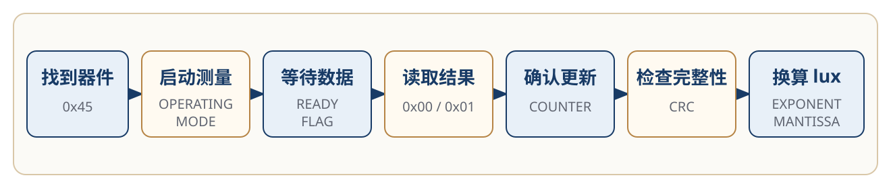
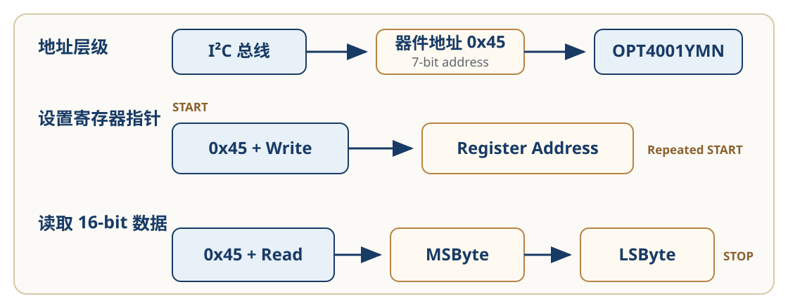
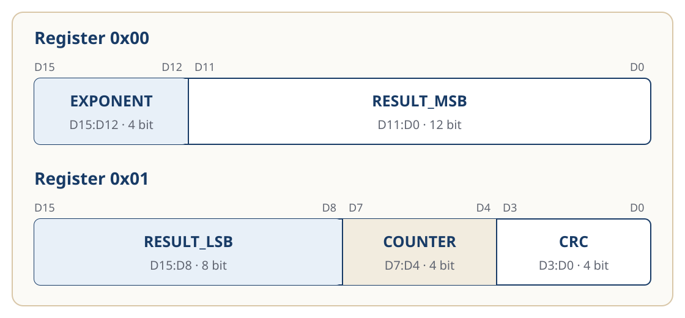

配置与数据读取
OPT4001YMN 上电后不会立即持续产生新的环境光测量结果。
主控需要先找到器件、启动测量、等待转换完成，再读取结果寄存器，并将原始数据换算为 lux。
本页按照一次完整的数据读取任务组织这些信息：
找到器件
→ 启动测量
→ 等待数据
→ 读取结果
→ 确认更新
→ 检查完整性
→ 换算 lux
验证状态
本页根据 TI 《OPT4001 Datasheet》和 《OPT4001YMNEVM User's Guide》整理。
工作模式、I²C 地址、寄存器字段和 lux 换算公式已经过官方资料核对。 示例流程和代码尚未在 OPT4001YMNEVM 实物或目标 MCU 上运行。
读取路径
一次完整读取包含以下步骤：
- 使用 I²C 地址
0x45访问 OPT4001YMN； - 将器件从 Power-down 切换到 Continuous；
- 等待一次新的转换完成；
- 从寄存器
0x00开始读取结果； - 使用 Counter 判断样本是否更新；
- 使用 CRC 检查读取过程中的 bit 错误；
- 将 Exponent 和 Mantissa 换算为 lux。
数据读取任务流程

图 1：OPT4001YMN 数据读取路径。根据 TI 《OPT4001 Datasheet》的工作模式、I²C 编程和寄存器定义整理。该图表示读取任务，不是芯片内部框图。
找到器件
OPT4001YMN 使用固定的 7-bit I²C 地址：
0x45
这个地址用于定位 I²C 总线上的 OPT4001YMN。
器件内部还包含多组寄存器。当前读取任务主要使用以下地址：
| 地址 | 作用 |
|---|---|
0x0A |
配置量程、转换时间和工作模式 |
0x0B |
配置 Burst Read |
0x0C |
查看转换完成状态 |
0x00 |
读取 Exponent 和 Mantissa 高 12 位 |
0x01 |
读取 Mantissa 低 8 位、Counter 和 CRC |
两类地址承担不同作用：
0x45
→ 定位 I²C 总线上的器件
0x00、0x01、0x0A……
→ 定位器件内部的寄存器
多数 MCU 的 I²C 接口接收 7-bit 地址，此时应传入 0x45。
0x8A 和 0x8B 是将 0x45 左移并加入读写位后形成的地址字节。只有底层接口明确要求完整地址字节时，才应使用这种形式。
设置寄存器指针
读取某个寄存器前，主控需要先写入目标寄存器地址：
器件地址 0x45 + Write
→ Register Address
随后发起读取：
器件地址 0x45 + Read
→ MSByte
→ LSByte
OPT4001 的寄存器宽度为 16 bit，发送顺序为高字节在前、低字节在后。
I²C 寄存器读取过程

图 2：OPT4001YMN 的 I²C 寄存器读取过程。根据 TI 《OPT4001 Datasheet》第 21—24 页重绘。该图用于说明地址层级和数据顺序，不表示完整电气时序。
器件会保留当前寄存器指针。重复读取同一个寄存器时，不需要每次重新设置； 切换到其他寄存器时，再写入新的寄存器地址。
启动测量
OPT4001YMN 上电后默认处于 Power-down。
Power-down 状态下：
- 器件不进行主动光感测和转换；
- 结果寄存器不会持续更新；
- 器件仍然响应 I²C 访问。
因此，能够读取配置寄存器，并不代表器件已经开始测量。
测量相关配置位于寄存器 0x0A：
| 字段 | 默认值 | 本页使用 |
|---|---|---|
RANGE |
0xC，Auto-range |
保持默认 |
CONVERSION_TIME |
0x8，100 ms |
保持默认 |
OPERATING_MODE |
0，Power-down |
修改为 3 |
将 OPERATING_MODE 从 0 修改为 3 后，器件进入 Continuous 模式：
Power-down
OPERATING_MODE = 0
↓
Continuous
OPERATING_MODE = 3
Continuous 模式下，OPT4001 按照配置的 Conversion Time 持续测量，并更新输出寄存器。
修改 OPERATING_MODE 时，建议采用读—改—写：
读取寄存器 0x0A
→ 只修改 OPERATING_MODE
→ 写回寄存器 0x0A
这样可以保留同一寄存器中的量程、转换时间和其他配置字段。
Conversion Time
Conversion Time 表示一次测量从开始到结果寄存器完成更新所需的时间。
默认值为：
CONVERSION_TIME = 0x8
转换时间约为 100 ms
器件支持从 600 μs 到 800 ms 的 12 档转换时间。较短的转换时间可以更快更新结果；有效测量分辨率还会受到转换时间和当前量程影响。
本页沿用默认的 100 ms，不对不同转换时间的实际性能作验证结论。
其他转换时间
| 字段值 | 转换时间 |
|---|---|
0 |
600 μs |
1 |
1 ms |
2 |
1.8 ms |
3 |
3.4 ms |
4 |
6.5 ms |
5 |
12.7 ms |
6 |
25 ms |
7 |
50 ms |
8 |
100 ms |
9 |
200 ms |
10 |
400 ms |
11 |
800 ms |
OPT4001 还提供两种 One-shot 模式。本页只讨论与首次连续读取直接相关的 Continuous。
等待数据
切换到 Continuous 后，需要等待新的转换完成，再读取结果寄存器。
可以使用两种方式判断读取时机。
按时间等待
使用默认的 100 ms Conversion Time 时，主控应为第一次转换预留足够时间。
不应在写入工作模式后立即将当前结果寄存器内容当成新样本。
具体等待时间还需要考虑：
- 当前 Conversion Time；
- MCU 和总线调度；
- 应用允许的采样周期。
检查状态
寄存器 0x0C 中的 CONVERSION_READY_FLAG 表示转换状态：
| 值 | 状态 |
|---|---|
0 |
转换仍在进行 |
1 |
转换已经完成 |
基本读取顺序可以写成：
读取 0x0C
→ CONVERSION_READY_FLAG = 1
→ 读取结果寄存器
读取寄存器 0x0C 会清除 CONVERSION_READY_FLAG，因此程序应在读取后保存并处理该状态。
读取结果
最新测量结果分布在两个连续的 16-bit 寄存器中。
寄存器 0x00
| 位 | 字段 | 作用 |
|---|---|---|
D15:D12 |
EXPONENT |
表示当前满量程范围 |
D11:D0 |
RESULT_MSB |
Mantissa 的高 12 位 |
寄存器 0x01
| 位 | 字段 | 作用 |
|---|---|---|
D15:D8 |
RESULT_LSB |
Mantissa 的低 8 位 |
D7:D4 |
COUNTER |
记录样本更新 |
D3:D0 |
CRC |
检查读取数据中的 bit 错误 |
结果寄存器位字段

图 3：OPT4001 结果寄存器 0x00 和 0x01。根据 TI 《OPT4001 Datasheet》第 27 页重绘。
一组完整结果需要读取 4 个字节：
0x00 MSByte
0x00 LSByte
0x01 MSByte
0x01 LSByte
Burst Read
寄存器 0x0B 中的 I2C_BURST 默认值为 1，即上电后默认启用 Burst Read。
启用后，每完成一次 16-bit 寄存器读取，寄存器指针自动增加 1：
设置寄存器指针为 0x00
→ 读取 0x00 的 2 个字节
→ 指针自动移动到 0x01
→ 读取 0x01 的 2 个字节
因此，主控可以从 0x00 开始连续读取 4 个字节，取得一组完整测量结果。
Burst Read 的作用是减少重复设置寄存器指针产生的 I²C 开销。
Datasheet 没有明确将 Burst Read 描述为两个结果寄存器的原子锁存机制，因此本页不作这一保证。
确认更新
COUNTER 是寄存器 0x01 中的 4-bit 滚动计数器。
它具有以下行为：
- 上电后从
0开始； - 每完成一次成功测量后递增；
- 到达
15后回到0； - 随后继续循环。
Counter 可以帮助主控判断结果寄存器是否持续更新。
例如：
| 现象 | 判断 |
|---|---|
| lux 不变，Counter 改变 | 传感器仍在测量，当前环境光可能较稳定 |
| lux 和 Counter 都改变 | 传感器正在更新新的测量结果 |
| Counter 长时间不变 | 继续检查工作模式、转换状态和读取逻辑 |
Counter 只能帮助判断样本更新情况，不能单独证明 lux 计算或通信内容一定正确。
检查完整性
CRC 位于寄存器 0x01 的低 4 bit。
OPT4001 在每次测量后更新 CRC，主控可以使用它检查输出数据读取过程中是否出现 bit 错误。
Counter
→ 判断样本是否更新
CRC
→ 检查读取数据是否完整
CRC 的计算涉及 Exponent、Mantissa 和 Counter 中的多组 bit。完整算法见 《OPT4001 Datasheet》第 27 页。
本页不重新简化 CRC 算法，避免给出未经验证的实现。
换算 lux
OPT4001 使用 Exponent 和 Mantissa 表示测量结果：
EXPONENT为 4 bit；MANTISSA为 20 bit；- Mantissa 分布在
RESULT_MSB和RESULT_LSB中。
组合 Mantissa
MANTISSA = (RESULT_MSB << 8) + RESULT_LSB
恢复 ADC code
ADC_CODES = MANTISSA << EXPONENT
也可以写为：
ADC_CODES = MANTISSA × 2^EXPONENT
计算 PicoStar lux
当前器件为 OPT4001YMN / PicoStar，使用以下系数：
lux = ADC_CODES × 312.5 × 10⁻⁶
等价于：
lux = ADC_CODES × 0.0003125
SOT-5X3 使用不同的换算系数，不能直接套用当前公式。
计算示例
以下数值只用于说明计算过程，不是实测结果。
假设读取到：
EXPONENT = 1
RESULT_MSB = 0x003
RESULT_LSB = 0xE8
组合 Mantissa：
MANTISSA
= (0x003 << 8) + 0xE8
= 1000
恢复 ADC code：
ADC_CODES
= 1000 << 1
= 2000
换算为 lux：
lux
= 2000 × 0.0003125
= 0.625 lux
Mantissa 需要 20 bit，经过 Exponent 左移后，ADC code 最多需要 28 bit。
实现计算时，应在左移前使用至少 32-bit 的无符号类型，避免中间结果溢出。
参考代码
下面的代码只负责解析已经读取到的寄存器 0x00 和 0x01。
它不包含：
- I²C 初始化；
- 寄存器读写；
- 工作模式配置；
- Ready Flag 轮询；
- 特定 MCU 的 HAL 接口。
#include <stdint.h>
/**
* Convert OPT4001YMN output registers to lux.
*
* This function only parses Register 0x00 and Register 0x01.
* It does not perform I2C communication.
*/
double opt4001_ymn_result_to_lux(
uint16_t result_reg_0,
uint16_t result_reg_1)
{
const uint8_t exponent =
(uint8_t)((result_reg_0 >> 12) & 0x0Fu);
const uint32_t result_msb =
(uint32_t)(result_reg_0 & 0x0FFFu);
const uint32_t result_lsb =
(uint32_t)((result_reg_1 >> 8) & 0x00FFu);
const uint32_t mantissa =
(result_msb << 8) + result_lsb;
/*
* Mantissa is 20 bit and Exponent can be up to 8.
* Use a 32-bit type before shifting.
*/
const uint32_t adc_codes =
mantissa << exponent;
return (double)adc_codes * 0.0003125;
}
Counter 和 CRC 可以这样提取：
const uint8_t counter =
(uint8_t)((result_reg_1 >> 4) & 0x0Fu);
const uint8_t crc =
(uint8_t)(result_reg_1 & 0x0Fu);
该代码根据 《OPT4001 Datasheet》中的寄存器字段和 lux 公式整理，尚未经过编译、目标 MCU 运行或实物验证。
本页边界
本页：
- 只讨论 OPT4001YMN / PicoStar；
- 使用固定的 7-bit 地址
0x45； - 使用 PicoStar 的 lux 换算系数；
- 说明 Continuous 模式下的基本读取路径；
- 不提供特定 MCU 的完整驱动。
本页不包含：
- SOT-5X3 的地址选择和 INT 功能；
- 完整 FIFO 使用方法；
- 阈值检测；
- 完整 CRC 实现；
- One-shot 的完整控制流程；
- 已经过硬件验证的轮询周期和代码结果。
资料来源
OPT4001 Datasheet
文档编号：SBOS993A，revised December 2022
- 工作模式：第 13—15 页；
- Conversion Time 和 lux 换算：第 18—19 页；
- I²C 地址和寄存器读取：第 21—24 页；
- 结果寄存器、Counter 和 CRC：第 26—27 页；
- 配置寄存器
0x0A：第 31 页； - Burst Read 和状态寄存器：第 32—33 页。
OPT4001YMNEVM User's Guide
文档编号：SBOU278，December 2021
- GUI 中的结果寄存器和配置寄存器：第 17 页。